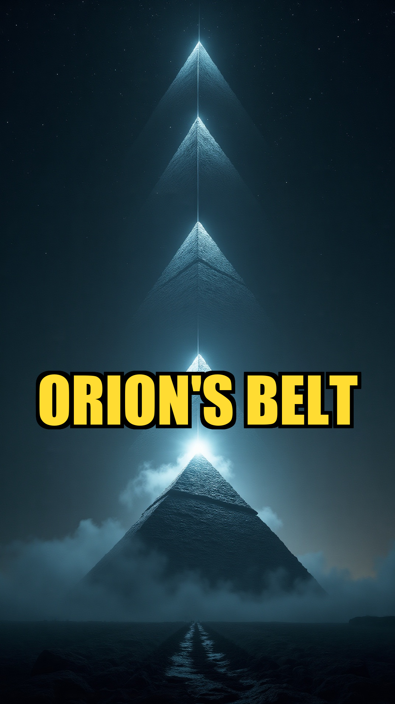

Hidden Epoch published six investigations on 2026-06-09. Six separate topics across cartography, biblical anthropology, archaeoastronomy, planetary catastrophism, comparative mythology, and population genetics. They look like six unrelated stories. They are not.
Each one documents the same shape: independent, unconnected witnesses arriving at identical specific patterns. When that happens once, you call it coincidence. When it happens twice, you call it convergent evolution. When it happens six times in twenty-four hours, you start asking what is generating the signal.

This is the synthesis post for the slate. Each section recaps one investigation with its receipts and links to the reel. The closing argument names the frame we are pushing against and what we think is on the other side of it.
1. Tartaria. Erased From Every Map Between 1769 and 1812.
Gerardus Mercator labeled it on his 1569 world map. Joan Blaeu drew its internal provincial subdivisions in his 1635 Atlas Maior. Nicolas Sanson updated it in 1680. The 1771 edition of Encyclopaedia Britannica still listed Tartary as a recognized ethnopolitical entity. By 1812 the name had vanished from every European map. No war was declared. No treaty was signed. Catherine the Great consolidated Russian administrative districts in 1782, but no annexation document marks the disappearance. Two hundred and fifty years of European cartography overturned in a single generation, with not one cartographer leaving a note explaining why.
Mainstream academia calls Tartaria a European misnomer for Mongol and Turkic peoples. The maps are still archived at the British Library, the National Library of France, and the Library of Congress. Cross-reference Blaeu's 1635 subdivisions with Russian imperial maps of 1800 yourself. The territories match. The name does not.
Watch the reel: They Erased An Empire Bigger Than Russia. The Maps Are In London. (YouTube) · Instagram
2. Five Ancient Religions Recorded The Same Giants At Identical Heights.
The Hebrew Bible records King Og of Bashan's iron bed at nine cubits, roughly 13.5 feet (Deuteronomy 3:11). The Babylonian priest Berossus, writing around 300 BCE, described antediluvian men between ten and fifteen feet tall. Hesiod's Theogony places the Greek Titans at twelve to fifteen feet. The Hindu Mahabharata records the Asura Hiranyakashipu at fourteen cubits. The Paiute oral tradition names red-haired Si-Te-Cah giants twelve feet tall at Lovelock Cave, Nevada, and in 1911 miners excavated skeletal remains the Paiute had been describing for generations.
The Paiute had zero documented contact with Babylon, Greece, or Vedic India. Five cultures, five continents, the same documented dimensions. The 1911 Lovelock specimens were sent to the Humboldt Museum and the Smithsonian. Public records of the largest examples stopped there.
Watch the reel: Five Ancient Religions Recorded The Same Giants. The Heights Match. (YouTube) · Instagram
3. Pyramids On Four Continents Align With Orion Within One Degree.
Egypt: the Giza pyramids of Khufu, Khafre, and Menkaure (c. 2560 BCE) align with the three stars of Orion's Belt. Robert Bauval published the Orion Correlation Theory in 1994. Mexico: the Sun, Moon, and Quetzalcoatl pyramids of Teotihuacan (c. 100 CE) align with Orion and the Pleiades. China: the Han mausoleum complex at Xi'an (c. 100 BCE), including the Maoling tomb, tracks stellar markers. Indonesia: Borobudur (c. 800 CE) aligns with Sirius and the sun. All four sites land within one degree of angular precision.
Egypt to Teotihuacan is 8,200 miles of open ocean. No pre-1492 trans-Pacific or trans-Atlantic contact is documented in mainstream archaeology. Either four isolated cultures picked the same star pattern by accident, or they inherited the template from somewhere older. The alignment math is verifiable on Google Earth.
Watch the reel: Four Civilizations Built This. They Never Once Spoke To Each Other. (YouTube) · Instagram
4. Four Civilizations Calculated The Same Catastrophe Cycle.
Sumerian texts describe Nibiru, or Planet X, returning on a 3,600-year orbit. Berossus recorded this in 300 BCE, citing antediluvian source material. The Vedic Yuga cycle tracks civilizational resets at the same interval, with the Vishnu Purana describing mini-resets every 3,600 years. The Maya Long Count encoded a 5,125-year great cycle that ended on 21 December 2012. The Hopi Great Purification prophecy, codified by Frank Waters in 1963 from oral tradition, names a fourth-world cycle approximately 3,600 years from the previous.
Sumer to the Hopi homeland is 11,000 miles. No shared astronomy existed between Mesopotamia, Vedic India, Mesoamerica, and Arizona. The geological record supports the math. The Younger Dryas impact horizon dates to roughly 12,800 BP. Heinrich Events recur every 6,000 to 7,000 years. Meltwater Pulse 1B coincides with the proposed window.
Watch the reel: 4 Ancient Civilizations Calculated the Same Catastrophe Cycle (Instagram)
One coincidence is data. Two is a coincidence. Six in a single news cycle is a frame change.
5. Five Creation Myths. Same Four Steps. Same Order.
The Sumerian Enuma Elish (c. 1750 BCE), the Hebrew Book of Genesis (c. 600 BCE), the Hindu Rigveda (c. 1500 BCE), the Norse Prose Edda (codified 1220 CE from older oral material), and the Egyptian Memphite cosmogony (c. 2500 BCE) all open with the same structural sequence. Void, primordial water, separation of earth from sky, man formed from clay.
The Sumerian and Egyptian traditions are separated by 4,000 years of recorded transmission and have no documented common ancestor. The Norse tradition has no documented contact corridor to Mesopotamia or Egypt before 800 CE. The Vedic tradition shares Proto-Indo-European roots with Norse but not with Sumerian or Egyptian. The structural identity across all five is too specific for Jung's archetype theory to carry the explanatory load. Walter Burkert conceded the match in The Orientalizing Revolution (Harvard 1992) and declined to name the mechanism.
Watch the reel: 5 Ancient Cultures Wrote the Same Creation Story. They Never Met. (Instagram)
6. Five Isolated Peoples Share DNA From A Species We Only Found Bones For In One Siberian Cave.
Svante Pääbo's Max Planck Institute team identified Denisovans as a distinct hominin species in 2010 from a single finger bone discovered in Denisova Cave in the Altai Mountains of Siberia. The total physical evidence for the species consists of three bone fragments and a handful of teeth from that one cave. That is the entire fossil record.
Yet Denisovan DNA appears in five modern populations. Melanesians of Papua New Guinea and the Solomon Islands carry up to six percent. Australian Aboriginals carry four to five percent. East Asians (Han Chinese, Japanese) carry trace amounts. Tibetans inherited the EPAS1 high-altitude adaptation gene directly from Denisovans. Native Filipinos of the Ayta Magbukon group carry the highest known Denisovan ancestry, around five percent.
None of these populations live anywhere near Siberia. Pacific Islanders separated from continental Asia around 70,000 years ago. The DNA traveled four thousand miles. The bones did not. Either Denisovans were a globally distributed species that left no fossils outside one cave, or there is an entire human species we have not yet found.
Watch the reel: They Found 3 Bones in Siberia. Then DNA Showed Up 4,000 Miles Away. (Instagram)
The Frame We Are Pushing Against
Mainstream history teaches each of these six stories as an isolated anomaly. Tartaria is a misnomer. The giants are exaggerations. The pyramid alignments are coincidence. The catastrophe cycles are mythopoeia. The creation parallels are Jungian archetypes. The Denisovan DNA is a fossil gap that will close.
Each individual explanation is defensible. Stack six of them in one day and the pattern stops being an artifact of presentation and starts being the actual signal. The standard frame requires that every domain of evidence independently invented the same impossible pattern. Cartography, biblical anthropology, archaeoastronomy, planetary geology, comparative mythology, and population genetics all happened to converge on identical structural anomalies by chance.
That is the load-bearing claim of the official frame. It is the one we think is wrong.
What We Think Is Actually Happening
There was a prior. Something existed before the cultures that wrote our oldest texts. It had cartography. It had astronomy. It built monuments to the same star patterns. It tracked the same celestial mechanics. It told the same creation story. It interbred with the local hominin populations from one end of Eurasia to the other. Then it was lost, comprehensively enough that no individual descendant culture could reconstruct it on its own, but partially enough that every descendant culture preserved fragments.
The Sumerians said this directly. So did the Egyptians, the Vedic compilers, the Norse skalds, the Hopi elders, and the authors of Genesis. Mainstream scholarship treats those statements as mythological flavor. We think they are the data.
One coincidence is data. Two is a coincidence. Six in a single day is a frame change. We will keep documenting them.
Books that informed today's six investigations
- The Sumerians (Kramer)
- Babylon: Mesopotamia and the Birth of Civilization (Kriwaczek)
- The Orion Mystery (Bauval & Gilbert)
- The Bible Unearthed (Finkelstein & Silberman)
As an Amazon Associate, Hidden Epoch earns from qualifying purchases. Cost to you: nothing.
Research safely
The VPN we use to research without being tracked. First 3 months free.
Get NordVPN →